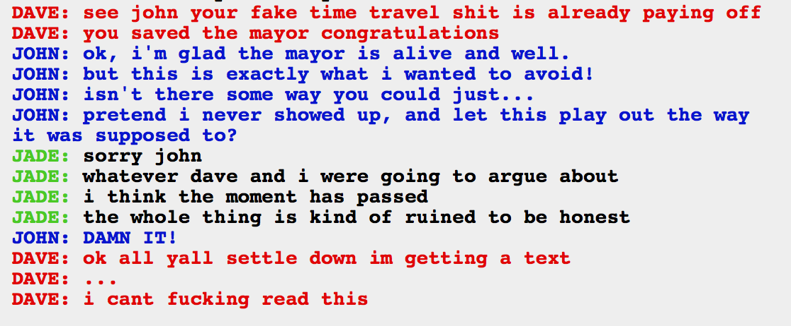

*patiently waits for BKEW to be around to link me to the deobfuscation of the Dirk/Dave conversation* It’s cool, it’s a weekday, I know you’re a busy guy!
Yay the mayor is saved, and that tedious conversation about evil Rose’s evil heartbreak maybe never happened kind of! Er, did it happen? Do we have a branching timeline now, like if John isn’t causing doomed timelines, can he break the alpha timeline into two…equally alpha timelines? One where the mayor was thrown off the ledge and one where he wasn’t, but neither doomed? Or does this supplant the previous events? I have shit to do but I want to know more!
NONE OF THOSE WERE REAL QUESTIONS BTW DO NOT TELL ME PLZ THNX